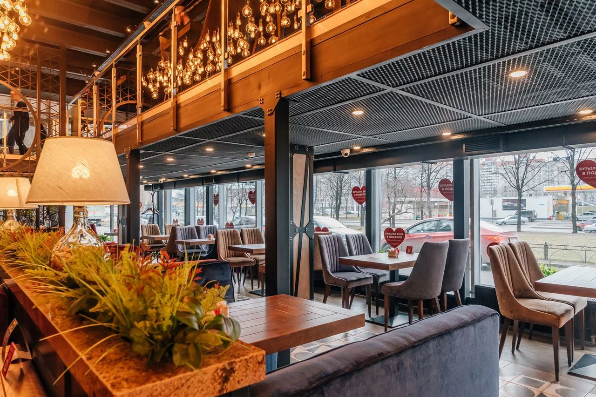

РЕСТОРАНЫ TOKIO CITY
ТОКИО-CITY — это современные городские рестораны с универсальной кухней. В нашем меню переплетаются элементы японской, итальянской, восточноевропейской, китайской и других кухонь. Более 500 блюд и напитков, новинки и хиты ждут вас! Приходите в гости или оформляйте заказ еды с доставкой: курьерская служба ресторана работает по всем районам Санкт-Петербурга.
Дизайн наших ресторанов выполнен в современном стиле. Сочетание неоновых вывесок, ярких цветовых акцентов, художественных панно и граффити отражает нашу концепцию заведения, вдохновлённого городом. Эклектичные интерьеры подойдут как для шумных вечеринок в кругу друзей, так и для уютных посиделок. У нас проводят время семьи с детьми, влюблённые пары, родственники и коллеги. В наших ресторанах вы можете провести бизнес-ланч, устроить романтический вечер или отпраздновать важное событие: юбилей, годовщину, свадьбу. У нас регулярно проходят банкеты: мы дарим скидки на день рождения и в особые даты. В ТОКИО-CITY постоянно устраиваются вечерние мероприятия, DJ-сеты, выступления артистов и караоке — мы знаем всё о качественном отдыхе!

Меню
Контакты